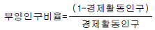
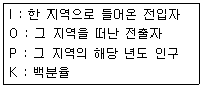

도시계획기사 (2003-03-16 기출문제)
1과목: 도시계획론
1. 도시재정 관리에 있어서 도시정부가 세입을 증대시키기 위한 방안으로 채택한다고 볼 수 없는 것은?
- 공채 발행
- 개발이익의 환수
- 공생산(共生産)방식의 도입
- 수익자 부담금 제도의 확대
(정답률: 알수없음)

2. 도시화가 진행되는 단계 중 집적의 불이익이 가장 크게 나타나는 단계는?
- 도시화 단계
- 교외화 단계
- 재도시화 단계
- 역도시화 단계
(정답률: 알수없음)
3. 다음 중 시민과 도시정부가 공동으로 공공서비스를 공급하는 공생산(co-production)에 가장 적합한 서비스 유형은?
- 도로수선, 공원, 지하철
- 도시가스, 병원, 주차장
- 범죄예방, 도서관, 노인 및 유아문제
- 경찰, 상수도, 전기
(정답률: 알수없음)
4. 혐오시설의 입지를 둘러싼 이른바 NIMBY 현상에 대한 올바른 설명이 아닌 것은?
- NIMBY 현상은 국민들의 쾌적한 환경에 대한 욕구 증대와 관련이 있다.
- NIMBY 현상을 타파하기 위해서는 혐오 시설 입지에 따라 적절한 피해 보상책도 강구하여야 한다.
- NIMBY 현상은 지방자치제가 본격적으로 실시됨에 따라 완화될 것이다.
- NIMBY 현상을 해결하기 위해 향후 지방정부의 중재자로서 역할이 중요해질 것이다.
(정답률: 알수없음)
5. 각종 도시의 활동이 지역공간에 투영되어 나타나는 것을 무엇이라 하는가?
- 용도지역지구제
- 도시 기능체계
- 도시 공간구조
- 토지이용계획
(정답률: 알수없음)
6. 다음 인구지표 산정기준 중 틀린 것은?

- 경제활동인구 = 15-64세 전 인구
- 성비 = (여자인구 ÷ 남자인구) × 10
- 가임여성연령계급 = 15 - 49세
(정답률: 알수없음)
7. 주민들이 도보로 상점이나 기타 공공시설을 이용할 수 있는 물리적 공간 크기의 반경을 페리(C.A.perry)는 얼마로 설정하였는가?
- 1/2마일(약 800m)
- 1/3마일(약 500m)
- 1/4마일(약 400m)
- 1/5마일(약 300m)
(정답률: 알수없음)
8. 생활 환경 시설의 광역 이용 체계에 있어 대생활권(광역대도시 생활권)의 이용 시설물이라고 할 수 없는 것은?
- 전문 의료시설 및 연구기관
- 특수 복지시설
- 국제 규모의 경기시설
- 유통 판매 연쇄점, 수퍼마켓
(정답률: 알수없음)
9. 도시의 기본계획 수립에서 생태계 구성요소를 중요한 계획인자로 고려한다. 그 요소의 내용으로 적합한 것은?
- 지형형태, 광물자원, 풍향, 지표구조
- 바람, 물, 온도, 습도, 지표구조, 광물자원
- 지형, 지표, 지질구조, 기후, 수계, 동식물
- 등고선, 계곡, 하천, 저습지, 취락구조
(정답률: 알수없음)
10. 도시의 구성요소를 크게 세가지로 나눈다면, 다음 중에서 가장 옳은 것은?
- 사람, 활동, 토지와 시설
- 활동, 토지와 시설, 문화
- 사람, 자연, 문화
- 활동, 토지와 시설, 자연
(정답률: 알수없음)
11. 독시아디스(Doxiadis)가 인간정주학(EKISTICS)에서 거대도시(metropolis)로 정의한 인구규모는 얼마인가?
- 100만
- 200만
- 500만
- 1000만
(정답률: 알수없음)
12. 르네상스 시대를 대표하는 바로크(Baroque) 도시에 대한 설명 중 옳지 않는 것은?
- 바로크형 도시계획은 기하학적 규칙성을 지니고 있다
- 바로크 도시는 경제성을 강조한 격자형 도시구조를 나타내고 있다
- 바로크의 도시형태는 장중한 공공건물과 넓은 도로를 특징으로 한다
- 베르사이유, 칼스루에, 포츠담과 같은 도시는 바로크 도시의 대표적인 사례다
(정답률: 알수없음)
13. 도시구조이론과 주창자의 연결이 잘못된 것은?
- 동심원이론 - 버제스(Burgess)
- 선형이론 - 호이트(Hoyt)
- 다핵심이론 - 해리스(Harris)와 울만(Ullman)
- 다차원이론 - 디킨슨(Dickinson)
(정답률: 알수없음)
14. 재개발구역 선정기준에 있어 지역의 성격과 노후도에 따라 구분되는 유형이 아닌 것은?
- 환경악화지역
- 안정지역
- 노후지역
- 철거지역
(정답률: 알수없음)
15. 어느 도시의 최근 10년간의 인구가 등차급수적으로 600,000명에서 900,000명으로 증가하였다고 가정할 때, 이 기간동안의 연평균증가율은 몇 %인가?
- 2.5%
- 5.0%
- 6.5%
- 7.5%
(정답률: 알수없음)
16. 토지이용에서 도시문제를 야기하는 대표적인 요인으로 들 수 없는 것은?
- 이용주체간의 경합
- 토지의 난개발
- 급속한 교외화
- 외부효과
(정답률: 알수없음)
17. 다음 신도시 중 그 성격이 다른 도시는?
- 캔버라(Canberra)
- 브라질리아(Brasilia)
- 상디갈(Chandigarh)
- 밀톤 케인즈(Milton Keynes)
(정답률: 알수없음)
18. 최근 서울은 전출인구가 전입인구보다 많은 역도시화현상이 나타나고 있다. 이와 같은 변화를 촉진한 원인으로 타당한 것은?
- 수도권 내 대학 입학정원의 동결
- 그린벨트의 설정
- 수도권 전철 등 교통망의 정비
- 수도권 소재 공장의 확대
(정답률: 알수없음)
19. 시장실패의 요인이 아닌 것은?
- 공공재
- 외부성
- 위험과 불확실성
- 사리사욕 추구행위
(정답률: 알수없음)
20. 집적경제의 구성요인이 아닌 것은?
- 내부적 규모의 경제
- 지방특화경제
- 범지구화경제
- 도시화경제
(정답률: 알수없음)
2과목: 도시설계 및 단지계획
21. 등고선에 관한 설명으로 옳지 못한 것은?
- 등고선 간격이 클수록 경사는 완만하다
- 등고선은 폐곡선이다
- 등고선은 절대로 교차하는 일이 없다
- 등고선의 선형과 간격으로 지형을 짐작할 수 있다
(정답률: 알수없음)
22. 다음의 주택단지 계획에서 크기 순으로 옳게 표시된 것은?
- 근린주구 → 근린분구 → 인보구 → 지역(지구)
- 지역(지구) → 근린주구 → 근린분구 → 인보구
- 지역(지구) → 인보구 → 근린주구 → 근린분구
- 지역(지구) → 근린분구 → 인보구 → 근린주구
(정답률: 알수없음)
23. 2,000세대 이상의 주택을 건설하는 주택단지에는 유치원을 설치하여야 하나, 다음 중 어떤 경우에는 유치원을 설치하지 아니하여도 되는가?
- 당해 주택단지로부터 통행거리 300m 이내에 유치원이 있는 경우
- 당해 주택단지로부터 통행거리 500m 이내에 유치원이 있는 경우
- 당해 주택단지로부터 통행거리 1㎞ 이내에 유치원이 있는 경우
- 당해 주택단지로부터 통행거리 2㎞ 이내에 유치원이 있는 경우
(정답률: 알수없음)
24. 일방향 도로 방식(One way system)의 특징이 아닌 것은?
- 속도를 빠르게 한다.
- 주거환경이 불량해진다.
- 주거지의 쾌적함을 증진시키다.
- 순환지구와 비순환지구간의 통과교통을 좌절시킨다.
(정답률: 알수없음)
25. 다음은 각종 국지도로의 장· 단점을 설명한 것이다. 틀린것은?
- 쿨데삭(Cul-de-sac)형은 통과교통을 완전히 차단하여 안전성이 높다.
- 격자형은 획지의 넓이를 자유롭게 설정할 수 있다.
- T자형은 쿨데삭의 문제점을 개선한 형태로, 손실되는 땅이 적다.
- 루프(Loop)형은 세도로와 교차점이 적다.
(정답률: 알수없음)
26. 어린이 놀이터 배치 기준에 적합한 것은?
- 150제곱미터이상인 어린이놀이터는 건축물의 외벽면으로 부터 5m 이상 떨어진 곳에 배치되어야 한다
- 100제곱미터이상인 어린이 놀이터는 건축물의 1층 외벽면으로 부터 3m 이상 떨어진 곳에 배치되어야 한다
- 상업지역의 간선도로변에 배치해야 한다
- 어린이 놀이터는 그 폭을 5m 이상으로 하되 교차로변에 배치해야 한다
(정답률: 알수없음)
27. 다음의 주차형식 중 차량 1대당 소요 면적이 가장 최소인 것은?
- 45° 주차방식
- 60° 주차방식
- 90° 주차방식
- 교차 주차방식
(정답률: 알수없음)
28. 대가구(집단가구superblock)에 관한 설명 중 틀린 것은?
- 1960년대 이후 주택이론가들에 의해 창안되었다.
- 토지의 효율적인 이용이 기본적인 목표이다.
- 도로 면적을 줄일 수 있고 보차 분리가 가능하다.
- 대형건물, 집합주택을 배치하기 적당하다.
(정답률: 알수없음)
29. 소음의 세기는 대수적 척도인 데시벨(DECIBEL)단위로 측정된다. 다음의 대표적인 음원의 세기 중 적당하지 아니한 것은?
- 160 데시벨 - 제트비행기의 소음
- 110-120 데시벨 - 자동차 경적
- 90 - 100 데시벨 - 지하철 소음
- 60 데시벨 - 번화가의 소음
(정답률: 알수없음)
30. 여가 및 운동시설 단지를 계획함에 있어서 체육시설의 설치· 이용에 관한 법률상의 공공체육시설의 구분에 속하지 않는 것은?
- 전문체육시설
- 생활체육시설
- 직장체육시설
- 여가체육시설
(정답률: 알수없음)
31. 막힌 도로의 최대 길이를 제한하는 이유에 적합하지 않은 것은?
- 통행이 간접적이 되어 단지내 활동의 효율성이 낮아지기 때문에
- 단지내의 편익 시설과의 거리가 멀어지기 때문에
- 긴급 피난시 탈출을 용이하게 하기 위하여
- 차량의 혼잡과 교통사고의 위험을 줄이기 위해
(정답률: 알수없음)
32. 대지분석에서 대지가 갖고 있는 자연적 성질을 분석하는 이유로 적합하지 않은것은?
- 대지가 갖고 있는 기본적 성격과 상호작용을 파악
- 대지가 갖고 있는 잠재력 파악
- 대지가 갖고 있는 생태적 특색을 파악
- 인간상호간에 미칠 수 있는 특색이나 영향 분석
(정답률: 알수없음)
33. 주간선 도로의 교차는 일정한 간격이내에서는 겹쳐서 일어나지 않도록 하는 것이 좋다. 그 이유는?
- 도로 건설비의 절약
- 교통체계상의 혼잡 방지
- 토지이용의 효율성 증대
- 대형건물의 건설촉진
(정답률: 알수없음)
34. 다음 중 입체 횡단보도교의 폭으로 틀리는 것은?
- 1분당 보행자수가 80인이상 120인미만인 경우 : 2.25m 이상
- 1분당 보행자수가 120인이상 160인미만인 경우 : 3.0m 이상
- 1분당 보행자수가 160인이상 200인미만인 경우 : 3.5m 이상
- 1분당 보행자수가 200인이상 240인미만인 경우 : 4.5m 이상
(정답률: 알수없음)
35. 단지계획에서 비용을 줄이기 위한 일반적인 원칙에 속하지 않는 것은?
- 이동경로의 길이를 최소한으로 줄인다.
- 간선과 지선을 구별해서 가로를 배치한다.
- 완만한 구배를 갖고 완만한 커어브만을 갖도록 가로를 배치한다.
- 가구(街區)의 크기를 소형으로 한다.
(정답률: 알수없음)
36. 근린 상업지역 내에서 대지면적 2,000m2에 건폐율 6/10, 용적율 480%로 각층 동일한 바닥면적으로 건축하려고 할때 최대 몇 층까지 할 수 있는가?
- 5층
- 6층
- 8층
- 10층
(정답률: 알수없음)
37. 환경과의 조화를 추구하려는 단지계획 방법은?
- 점진주의
- 방법주의
- 행태주의
- 생태주의
(정답률: 알수없음)
38. 근린주구 단위(Neighborhood Unit)의 단지개발 방식을 창시한 인물은?
- Kevin Lynch
- Ebenezer Howard
- Clarence A.Perry
- Clarence Stein
(정답률: 알수없음)
39. 국지 도로의 기능에 해당되지 않는 것은?
- 도시내 커뮤니티와 주간선(主幹線)을 연결
- 도시 구성상 모세혈관의 역할
- 주거의 기본 단위가 되는 가구(街區)의 크기를 규격화
- 주거환경을 보호하는 기능
(정답률: 알수없음)
40. 단지계획의 기본적인 목표로 가장 잘 짜여진 것은?
- 기능성 - 경제성 - 심미성
- 기능성 - 환경성 - 심미성
- 기능성 - 경제성 - 환경성
- 경제성 - 환경성 - 심미성
(정답률: 알수없음)
3과목: 도시개발론
41. 다음 1:50,000 지형도에서 등고선 간격에 대한 사항 중 맞는 것은?
- 주곡선 10m, 간곡선 5m, 조곡선 2.5m
- 주곡선 10m, 간곡선 5m, 조곡선 20m
- 주곡선 20m, 간곡선 10m, 조곡선 5m
- 주곡선 20m, 간곡선 10m, 조곡선 100m
(정답률: 알수없음)
42. 다음은 트랜싯의 기계오차에 대한 기술로서 옳은 것은?
- 수평축 오차는 목표의 높이에 따라 다르다.
- 시준축 오차는 목표의 높이에 관계 없이 일정하다.
- 연직축 경사에 따른 수평각 오차는 망원경의 정, 반관측 평균에 의해 소거 된다.
- 망원경의 외심오차는 눈금반의 중심과 연직축의 중심이 편위해서 생긴다.
(정답률: 알수없음)
43. 다음 지형공간정보체계의 좌표변환 중 격자 방법에 의한 직접변환 방법은?
- 해석적 변환
- 가우스이중투영변환
- 부등각상사 변환
- 메르카토르 투영 변환
(정답률: 알수없음)
44. 축척 1:25,000지형도에서 100m 등고선상의 점과 120m 등고선상의 점을 도상거리에서 20mm을 얻었다. 이때 두점의 경사각은 얼마인가?
- 2° 17'26"
- 2° 18'38"
- 16° 17'15"
- 20° 17'42"
(정답률: 알수없음)
45. 거리 측정에서 줄자로 한번 측정할 때의 확률오차가 ±0.01m이고 약 450m의 거리를 50m 줄자로 9회 나누어 측정했을때 이때의 확률오차는 얼마인가?
- ± 0.09m
- ± 0.07m
- ± 0.⑤m
- ± 0.03m
(정답률: 알수없음)
46. 지거간 간격이 5m로 등간격이고, 각 지거가 y1 = 2.8m, y2 = 9.4m, y3 = 11.6m, y4 = 13.8m, y5 = 6.4m 일 때 Simpson 제 1 법칙의 공식으로 구한 면적은?
- 208.7 m2
- 170 m2
- 469.2 m2
- 545.2 m2
(정답률: 알수없음)
47. 평판측량에서 두 방향선의 교각이 80° 20', 한 방향선의 변위를 0.15㎜라고 할 때 교회점의 위치오차는?
- 0.11 ㎜
- 0.22 ㎜
- 0.28 ㎜
- 0.32 ㎜
(정답률: 알수없음)
48. A, B 2점간의 거리를 같은 광파거리측량기를 사용하여 측정하였다. 이 때에 2점간 거리의 최확값은? (단, 1차평균 거리 1000.010m, 표준편차 0.006m 2차평균 거리 1000.020m, 표준편차 0.002m)
- 1000.020m
- 1000.004m
- 1000.006m
- 1000.008m
(정답률: 알수없음)
49. 다음은 지도투영시 일어나는 왜곡에 관한 설명이다. 틀린것은?
- 각이나 면적 등을 곡면에서 평면으로 변환할 때 왜곡이 일어나며 투영은 필연적으로 왜곡을 동반한다.
- 여러 가지의 왜곡을 단일 투영으로 모두 바로잡을 수는 없으며, 투영법의 선택에 따라 왜곡특성이 변한다.
- 주로 하나의 요소에 대한 왜곡이 최소화되면 그 동안 다른 요소들에 대한 왜곡도 어느 정도 보정이 된다.
- 투영에서 왜곡의 영향을 알아 보기 위해서 지시원을 이용한다.
(정답률: 알수없음)
50. 수준기의 관형기포관 눈금을 8눈금 이동하였더니, 60m 떨어진 표척의 읽음값이 0.046m 변화하였다. 이 수준기의 감도는?
- 10"
- 20"
- 30"
- 40"
(정답률: 알수없음)
51. 지형측량의 결과인 등고선도의 이용에서 틀린 것은?
- 지적도의 작성
- 노선의 도상선정
- 성토, 절토의 범위결정
- 집수면적의 측정
(정답률: 알수없음)
52. 측점 A에 트랜싯을 세우고 250m되는 거리에 있는 B점에 세운 pole을 시준 하였다. 이때 Pole이 말뚝중심에서 좌로 1.5cm가 떨어져 있었다 한다. 이에 대한 각도의 오차는 다음 어느 것인가?
- 10.38"
- 12.38"
- 13.38"
- 14.38"
(정답률: 알수없음)
53. 다음중 자료의 위상(Topology)관계의 설정을 위한 요소가 아닌 것은?
- 연결성(Connectivity)
- 단순성(Simplification)
- 인접성(Contiguity)
- 면적의 정의(Area Definition)
(정답률: 알수없음)
54. 평판측량에서 축척 1/1000의 도면을 작성할 때 도상점의 위치 허용오차를 0.2mm라 하면 측점의 허용되는 구심오차 (求心誤差)는?
- 15 cm
- 25 cm
- 10 cm
- 5 cm
(정답률: 알수없음)
55. 트래버어스의 전측선장이 900m일때 폐합비가 1/5000로 하기 위하여서는 축척 1/500 도면에서 폐합오차는?
- 0.36 mm
- 0.46 mm
- 0.56 mm
- 0.66 mm
(정답률: 알수없음)
56. 광파거리측량기가 많이 이용되는 이유 중 틀린 것은?
- 정확도가 높다.
- One-men Surveying이 가능하다.
- 기상조건의 영향을 받지 않는다.
- 전파거리측량기에 비해 조작시간이 짧다.
(정답률: 알수없음)
57. 1등부터 3등까지의 삼각점을 16km2에 대하여 2점씩 설치하고 1등부터 4등까지의 삼각점을 2km2에 대하여 1점씩 설치할때 80km2에는 몇개의 4등 삼각점을 설치하는 것이 좋은가?
- 40점
- 30점
- 20점
- 10점
(정답률: 알수없음)
58. 오차의 발생원인에 대한 설명 중 틀린 것은?
- 원자료의 오차는 자료기반에 거의 포함되지 않는다.
- 지역을 지도화하는 과정에서 선으로 표현할 때 오차가 발생한다.
- 여러가지의 자료층을 처리하는 과정에서 오차가 발생한다.
- 자료입력을 수동으로 하는 것도 오차 유발의 원인이 된다.
(정답률: 알수없음)
59. 간접적인 등고선 측량방법이 아닌 것은?
- 종단점법
- 레벨법
- 방안법
- 지성선법
(정답률: 알수없음)
60. 기온이나 토질, 고도와 같이 모든 곳에 존재하며 연속적으로 변화하는 특징을 표현하는 방법으로 적당하지 않은 것은?
- 몇 군데의 기준점에서 관측하는 방법
- 횡단을 취하는 방법
- 등치선을 그리는 법
- 해당 구역을 몇 개의 구역으로 나누고 그 구역 안에서의 변화를 세밀히 추적하는 방법
(정답률: 알수없음)
4과목: 국토 및 지역계획
61. 다음은 제 4차 국토종합계획의 시도별 발전방향을 적은 것이다. 설명 중 틀린 것은?
- 부산 : 환태평양권 국제 해양· 물류 도시
- 대구 : 동북아권 국제정보· 교류 도시
- 광주 : 첨단광산업· 문화예술 중심도시
- 대전 : 과학기술 중추도시
(정답률: 알수없음)
62. 다음 중 지역경제 성장예측에 관한 이론(모델)이 아닌것은?
- 변이.할당분석(Shift-share analysis)
- 경제기반이론(Economic base theory)
- 헤롯,도마모델(Herrod - Domar model)
- 지니곡선(Gini curve)
(정답률: 알수없음)
63. 다음 사항 중 지역계획과정에서 간접적인 주민참여 방식인 것은?
- 심의회
- 델파이(Delphi)조사법
- 연구회
- 공청회
(정답률: 알수없음)
64. 영국에서는 1930년대에 들어오면서 지역개발과 계획발전에 큰 영향을 미친 세가지 보고서가 출간되었는데, 이 가운데 스코트 보고서는 어떤 내용을 담고 있는가?
- 인구분산과 공업재배치
- 토지공개념
- 개발이익의 사회적 환원
- 그린벨트
(정답률: 알수없음)
65. 국토계획의 성격으로 잘못된 것은?
- 정책지향적
- 거시적 계획
- 지침 제시적 계획
- 구체적 실질적 계획
(정답률: 알수없음)
66. 인구 이동의 흐름(Migration Stream)을 측정하기 위해 순이동율을 구하고자 한다. 다음 중 맞는 것은?

- O/P*K
- I/P*K
- {(I-O)/P}*K
- {(I+O)/P}*K
(정답률: 알수없음)
67. 결절지역(Nodal Region)내 중심 지점의 크기와 그 지점간의 거리에 대한 관계를 언급한 레일리 (W.J.Reilly)의 법칙을 올바르게 표현한 것은?
- 두 중심 지점간의 흐름은 그 중심 지점의 크기 및 그 지점간의 거리의 제곱에 정비례 한다.
- 두 중심 지점간의 흐름은 그 중심 지점의 크기에 정비례하고 그 지점간의 거리의 제곱에 반비례한다.
- 두 중심 지점간의 흐름은 그 중심 지점의 크기에 반비례하고 그 지점간의 거리의 제곱에 정비례한다.
- 두 중심 지점간의 흐름은 그 중심 지점의 크기 및 그 지점간의 거리의 제곱에 반비례한다.
(정답률: 알수없음)
68. 입지계수(Location Quotient: L.Q)를 사용하여 기반산업과 비기반산업을 나눔에 있어 기본적인 가정으로 틀린것은?
- 지역과 전국의 노동 생산성이 동일하다.
- 지역과 전국 간의 소비수준이 동일하다.
- 국가는 국가간 교역이 자유로운 개방 경제로 간주한다.
- 지역과 전국 간의 상품의 동질성이 보장된다.
(정답률: 알수없음)
69. 총 고용이 50만명인 어느 지역의 경제기반승수가 2라면, 기반활동 고용이 1만명 증가할 때 총 고용은 어떻게 변화 할까?
- 52만명으로 증가
- 53만명으로 증가
- 54만명으로 증가
- 51만명으로 증가
(정답률: 알수없음)
70. 다음 지역개발전략 중에서 나머지 셋과 성격이 다른 전략은 무엇인가?
- 성장거점개발전략
- 불균형개발전략
- 하향식 개발전략
- 내생적 개발전략
(정답률: 알수없음)
71. 대도시권(또는 광역도시권)의 개념으로 적당하지 않은 것은?
- 대도시의 제기능이 주변지역에 영향을 미치는 공간적 범위
- 중심대도시와 기능적 연계를 지닌 일상생활권
- 중심대도시와 행정력이 영향을 미치는 직접세력권
- 중심대도시와 경제.사회.문화적으로 통합된 지역
(정답률: 알수없음)
72. 지방계획과 국토계획의 형태로서 정치적인 분류 중 상향적 (Buttom-up) 형태의 발전형식은?
- 국토계획→ 지방계획→ 도시계획
- 국토계획→ 도시계획→ 지방계획
- 도시계획→ 지방계획→ 국토계획
- 도시계획→ 국토계획→ 지방계획
(정답률: 알수없음)
73. 국토계획, 지역계획, 도시계획의 차별성은 다음의 어디에 중점을 두고 있는가?
- 경제적 조건과 수준
- 시간적 차이
- 토지이용상태
- 공간적 범위와 차이
(정답률: 알수없음)
74. 지역정책의 필요성을 경제적 관점에서 기술한 것과 거리가 먼 것은?
- 지역간 불균형 해소를 통한 GRP 증대
- 과밀로 인한 불경제 방지
- 지역 정주 환경의 정비
- 인플레 해소 등 경제 안정 도모
(정답률: 알수없음)
75. 다음 국가도시개발전략 중 집중효과를 초래하는 전략에 해당되는 것은?
- 거점 개발(growth centers)
- 지역 대도시개발(regional metropolis)
- 중소 도시개발(secondary cities)
- 자유 방임(laissez-faire)
(정답률: 알수없음)
76. 성장거점으로 지역개발이 가능하기 위한 성장거점과 그 영향력 지대인 주변 지역간의 관계를 기술한 것 중 옳지 않은 것은?
- 성장거점 도시는 주변 지역과 어느 정도 구조적 균형성을 가져야 한다.
- 성장거점 내의 주축산업은 주로 지역외에 시장을 갖는 수출분야의 산업이어야 한다.
- 성장거점 도시는 주변지역에 상품과 서비스를 제공하여 주변지역 생활수준과 환경개선과 향상에 기여를 할 수 있어야 한다.
- 추진적 산업체가 성장거점 주변에 주로 집중하고 이러한 산업의 생산활동을 유지시켜 줄 사회 간접 자본도 이런 곳에 집중 투자되어야 한다.
(정답률: 알수없음)
77. 다음 중 한계자원(Marginal resources)의 특성이 아닌것은?
- 현재의 시장구조하에서는 개발가치가 없다.
- 단위투입당 생산성이 매우 낮다.
- 개발기술이 개발되어 있지 못하다.
- 자원의 매장량이 거의 고갈상태에 이르렀다.
(정답률: 알수없음)
78. 로렌츠곡선(Lorenz Curve)이 지역계획에서 쓰이는 경우는?
- 지역주민의 소득분배 현황을 추계할 때
- 지역경제 구조의 변천을 추계할 때
- 지역고용 구조중 비농림업 부문 종사자의 비율을 추계할 때
- 지역총 생산량(G.R.P)중 공업부가가치의 비율을 추계할 때
(정답률: 알수없음)
79. 수도권은 아래 지역구분 중 어디에 근거한 것인가?
- 동등성
- 결절성
- 동일성
- 합리성
(정답률: 알수없음)
80. 지역계획을 처음으로 이론적으로 체계화한 사람은?
- 제임스 토마스(James Thomas)
- 체스터 볼즈(Chester Bohls)
- 폴 울프(Paul Wolf)
- 아더 코미(Arther Comey)
(정답률: 알수없음)
5과목: 도시계획관계법규
81. 다음 중 국토계획및이용에관한법률상의 도시기본계획에 관한 기초 조사 항목과 가장 거리가 먼 것은?
- 기반시설 및 주거 수준의 현황과 전망
- 토지의 지번, 면적 및 지목 현황
- 도시계획과 관련된 다른 계획 및 사업의 내용
- 풍수해. 지진 그밖의 재해의 발생 현황 및 추이
(정답률: 알수없음)
82. 택지개발사업 실시계획의 승인 신청은 택지개발계획이 승인된 날부터 몇 년 내에 하여야 예정지구 지정이 해제되지 않는가?
- 10년이내
- 5년이내
- 3년이내
- 2년이내
(정답률: 알수없음)
83. 국토의계획및이용에관한법률에 의한 개발진흥지구를 설명한 것 중 사실과 다른 것은?
- 주거기능 중심으로 개발. 정비할 필요가 있는 지구는 취락개발진흥지구이다.
- 공업기능 중심으로 개발. 정비할 필요가 있는 지구는 산업개발진흥지구이다.
- 유통.물류기능 중심으로 개발. 정비할 필요가 있는 지구는 유통개발진흥지구이다.
- 관광.휴양기능 중심으로 개발. 정비할 필요가 있는 지구는 관광휴양개발진흥지구이다.
(정답률: 알수없음)
84. 도시계획구역내의 녹지지역안에 있는 취락을 정비하기 위해서는 다음 중 어떤 도시계획 결정이 필요한가?
- 취락지구의 지정
- 주거개발진흥지구 구역의 지정
- 주택개량재개발사업구역의 지정
- 경관지구의 지정
(정답률: 알수없음)
85. 국토의계획및이용에관한법률상 도시계획 용도지역의 건폐율을 잘못 표현한 것은?
- 유통상업지역 : 80/100 을 초과할 수 없다.
- 준공업지역 : 70/100 을 초과할 수 없다.
- 준주거지역 : 60/100 을 초과할 수 없다.
- 보전녹지지역 : 20/100 을 초과할 수 없다.
(정답률: 알수없음)
86. 도시계획시설사업에 필요한 토지를 수용할 경우 공익사업을위한토지등의취득및보상에관한법률에 의한 사업인정및 그 고시로 보는 것은?
- 도시계획의 결정고시
- 실시계획의 고시
- 지형도면의 고시
- 단계별 집행계획의 공고
(정답률: 알수없음)
87. 개발제한구역안에서 원칙적으로 허용되지 않는 행위에 속하지 않는 것은?
- 건축물의 건축 및 용도변경, 공작물의 설치
- 토지의 형질변경과 토지의 분할
- 죽목의 재식과 간벌
- 도시계획사업
(정답률: 알수없음)
88. 도시재개발법에서 말하는 공용 및 공공용시설이 아닌것은?
- 초등학교
- 공동구
- 공원
- 광장
(정답률: 알수없음)
89. 다음 주택건설촉진법상 내용 중 틀린 것은?
- 국민주택이라함은 국민주택기금에 의한 자금을 지원 받아 건설되거나 개량되는 주택을 말한다.
- 건설교통부장관은 국민주택사업의 시행을 위하여 국민주택사업 특별회계를 설치얇운용하여야 한다.
- 시장얇군수는 아파트지구의 지정이 있을 때에는 아파트지구 개발에 관한 기본계획을 수립하여 도지사의 승인을 얻어야 한다.
- 공동주택의 관리를 업으로 하는 자는 도지사에게 등록하여야 한다.
(정답률: 알수없음)
90. 도시공원 조성계획의 입안 결정에 관한 기술이다. 틀린것은?
- 도시공원 조성계획은 도시계획으로 결정하여야 한다
- 건설교통부장관 또는 도지사에게 재정(裁定)이 있은 때에는 도시공원조성계획 입안자에 대한 협의가 성립된 것으로 본다.
- 2 이상의 행정구역에 걸치는 도시공원 대해서는 반드시 관계시장 또는 군수가 공동으로 입안해야 한다
- 2 이상의 도와 관련되는 도시공원에 협의가 성립되지 않는 도시공원에 대한 것은 건설교통부장관에게 그 재정(裁定)을 신청할 수 있다.
(정답률: 알수없음)
91. 공장 총량 규제의 설명 내용 중 틀린 사항은?
- 공장총량규제는 종전의 개별적 규제방식의 경직성을 완화하기 위하여 도입되었다.
- 건설교통부장관은 수도권정비위원회의 심의를 거쳐 시, 군, 구의 지역별로 공장 총허용량을 배분한다.
- 수도권의 공장 총량을 변경하는 경우에도 수도권정비위원회 심의를 거쳐야 한다.
- 공장 총량 규제는 공장건축물의 신축, 증축 또는 용도변경을 대상으로 적용한다.
(정답률: 알수없음)
92. 시.도지사는 관광개발기본계획에 의하여 구분된 권역을 대상으로 하여 권역별관광개발계획을 수립하여야 한다. 이 권역별관광개발계획에 포함되는 사항이 아닌 것은?
- 관광자원의 보호.개발.이용.관리 등에 관한 사항
- 환경보전에 관한 사항
- 관광권역의 설정에 관한 사항
- 관광지및 관광단지의 조성.정비.보완 등에 관한 사항
(정답률: 알수없음)
93. 주차장법에서 단지조성사업 등에 따른 로외주차장을 설치하여야 하는 사업의 종류가 아닌 것은?
- 주택지조성사업
- 역세권개발사업
- 도시철도건설사업
- 산업단지개발사업
(정답률: 알수없음)
94. 국토계획및이용에관한법률의 지구단위계획과 관련된 내용중 틀린 것은?
- 지구단위계획은 제1종지구단위계획과 제2종지구단위 계획으로 구분한다.
- 지구단위계획구역및 지구단위계획은 도시관리계획으로 결정한다
- 지구단위계획구역 지정에 관한 도시관리계획결정고시 일부터 3년 이내에 계획수립 불가시 구역 지정에 관한 도시관리계획의 결정 자체가 실효된다
- 상세계획과 같이 지구단위계획으로 대단위의 용도지역의 변경이 가능하다.
(정답률: 알수없음)
95. 건설교통부장관은 국토종합계획을 사회적.경제적 여건변화를 고려하여 몇 년마다 전반적으로 재검토하고 필요한 경우 이를 정비하여야 하는가?
- 1년
- 3년
- 5년
- 10년
(정답률: 알수없음)
96. 재개발사업의 비용부담에 관한 설명 중 틀린 것은?
- 재개발사업시행에 관한 비용은 일반적으로 시장·군수 또는 구청장이 시행하는 경우에는 당해 시· 군 또는 자치구가, 기타의 자가 시행하는 경우에는 그가 부담한다.
- 시· 군 또는 자치구는 시장· 군수 또는 구청장외의 시행자가 시행하는 재개발사업으로 설치되는 공공시설 중 도로, 광장 등 주요 시설에 대하여는 그 설치에 소요되는 비용의 전부 또는 일부를 부담할 수 있다.
- 주택재개발사업의 경우로서 당해 구역 및 주변지역의 이용에 제공되는 당해 재개발구역의 지정 당시 도시 계획으로 결정· 고시된 너비 20미터이상인 통과도로 로서 시· 도의 조례로 정하는 도로와 어린이공원에 대하여는 그 설치비용의 전부 또는 일부를 부담하여야 한다.
- 시행자가 공동구를 설치하는 경우에는 다른 법령에 의하여 그 공동구에 수용될 시설을 설치할 의무가 있는 자에게 공동구의 설치에 소요되는 비용을 부담 시킬 수 있다.
(정답률: 알수없음)
97. 도시개발사업에서의 특유한 재원확보 방법은?
- 수익자 부담금
- 원인자 부담금
- 체비지 매각
- 국고 보조금
(정답률: 알수없음)
98. 특별시장.광역시장.시장 또는 군수가 주거.상업 또는 공업지역에서 개발행위로 인하여 기반시설의 처리.공급 또는 수용 능력이 부족할 것이 예상되거나 기반 시설의 설치가 곤란한 지역에 지정하는 구역은?
- 기반시설부담구역
- 개발밀도관리구역
- 제2종 지구단위계획구역
- 용도구역
(정답률: 알수없음)
99. 다음은 건축선에 대한 설명이다. 옳은 것은?
- 인접대지경계선도 건축선으로 본다.
- 소요너비이상의 도로에 접하고 있는 경우에는 도로 경계선을 건축선으로 한다
- 사도에 대하여는 건축선에 관한 규정이 적용되지 않는다.
- 지표화의 부분이라도 건축선을 넘어서 건축할 수 없다.
(정답률: 알수없음)
100. 지하도로의 설치기준을 설명한 것 중 잘못된 것은?
- 지하도로라 함은 폭 4m이상의 도로로 통상의 교통소통을 위해 설치된 지하차도를 말한다.
- 지하도로는 지상교통의 원활한 소통을 목적으로 설치한다.
- 지하도로는 인구집중예상지역에 원활한 교통처리를 위하여 설치한다.
- 지하도로는 다수의 시민이 이용하는 시설이 있는 지역의 원활한 교통처리를 위하여 설치한다.
(정답률: 알수없음)